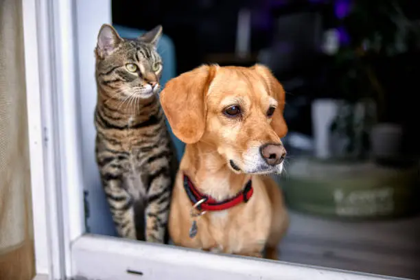

Petmaniacs
All information you need to know, for becoming a petowner
Welcoming a Furry Friend into Your Home
Embarking on the journey of pet ownership is a rewarding and enriching experience that brings boundless joy and companionship. Whether you're considering adopting a playful puppy, a curious kitten, or a more mature pet, the decision to invite a furry friend into your life is a significant one. Pets offer unwavering loyalty, unconditional love, and a unique bond that transcends words. Before taking the plunge into pet parenthood, it's essential to consider the responsibilities that come with caring for a living being. From daily walks to regular veterinary check-ups, providing a loving and nurturing environment requires commitment and time. Yet, the immeasurable joy and the countless cherished moments shared with your pet make every effort worthwhile. As you explore the possibility of becoming a pet owner, remember that it's not just about finding the perfect pet; it's about becoming the perfect companion for them.
The ABCs of Pet Parenthood: A Guide for New Pet Owners
Congratulations on deciding to welcome a furry family member! As a new pet owner, there's a lot to learn and discover about your chosen companion's needs, habits, and unique personality. Begin by creating a safe and comfortable space for your pet to thrive, complete with cozy bedding, toys, and, for cats, a scratching post. Establishing a routine for feeding, exercise, and playtime helps build a sense of security for your pet. Regular veterinary care is essential, ensuring vaccinations, preventive medications, and overall well-being. Invest time in understanding your pet's dietary requirements, grooming needs, and the importance of socialization. Remember, the journey of pet parenthood is a two-way street; as you provide care, your pet reciprocates with boundless affection and loyalty.
Choosing the Perfect Pet: A Tailored Match for Your Lifestyle
Selecting the right pet that aligns with your lifestyle and preferences is a crucial step in ensuring a harmonious companionship. Consider factors such as size, energy level, and temperament when choosing a pet that complements your daily routine. If you're an avid outdoor enthusiast, an active dog breed might be an ideal fit for your adventures. For those who prefer a more relaxed pace, a laid-back cat or a smaller dog may be a better match. Additionally, research breeds or species to understand their specific needs, from grooming requirements to potential health concerns. Whether you opt for a rescue pet or choose a specific breed, the key is finding a furry friend whose personality and needs align with your own, setting the stage for a fulfilling and lifelong bond.